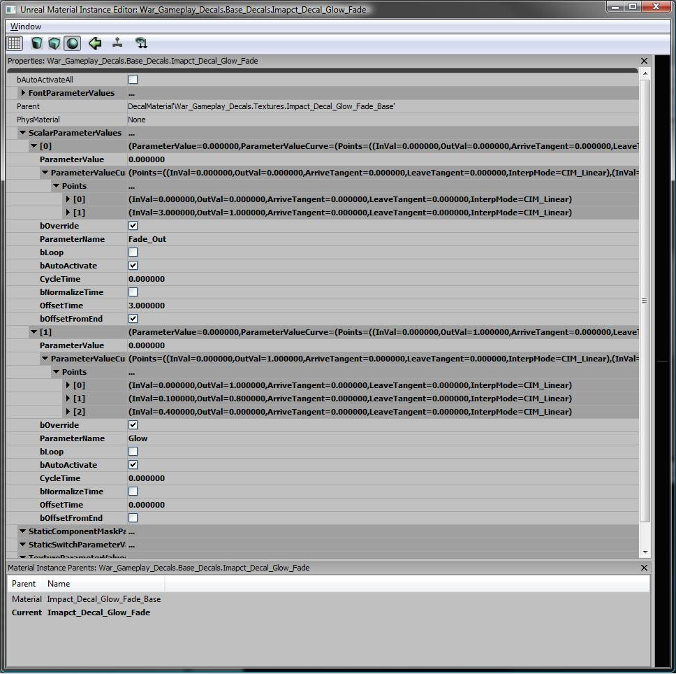

UDN
Search public documentation:
InstancedMaterials_TimeVarying
日本語訳
中国翻译
한국어
Interested in the Unreal Engine?
Visit the Unreal Technology site.
Looking for jobs and company info?
Check out the Epic games site.
Questions about support via UDN?
Contact the UDN Staff
中国翻译
한국어
Interested in the Unreal Engine?
Visit the Unreal Technology site.
Looking for jobs and company info?
Check out the Epic games site.
Questions about support via UDN?
Contact the UDN Staff
UE3 Home > Materials & Textures > Instanced Materials Time Varying
UE3 Home > Particle & Effects > Decals > Instanced Materials Time Varying
UE3 Home > Particle & Effects > Decals > Instanced Materials Time Varying
Instanced Materials Time Varying
Overview
Making an MITV
Parts of an MITV and what they do
Once you have an MITV you will have a number of Params that exist which can be filled in to cause the MITV to do vary over time. bLoop: if true, then the CycleTime is the loop time and time loops bAutoActivate: This will auto activate this param CycleTime: this controls time normalization and the loop time bNormalizeTime: if true, then the CycleTime is used to scale time so all keys are between zero and one OffsetTime: How much time this will wait before actually firing off. This is useful for keeping the curves being just the data for controlling the param and not a bunch of slack in the beginning (e.g. to wait N seconds then start fading) bOffsetFromEnd: When using OffsetTime it is nice to be able to offset from the end of the decal's lifetime (e.g. you want to fade out the decal, you want to change the color of the decal before it fades away etc.) various curve data: This is the data which will be evaluated and then the parameter will be set to the value. So just like other curves in UE3 a value (in this case time) is passed into the curve. The curve evaluates that InVal and sets the parameter to the calculated value.Examples
Example of an MITV
 This MITV has two parameters that fade. A Fade_Out and a Glow. The Glow a parameter that starts right when this material is placed in the world and from the curve we can see that it takes .4 seconds to go from 1 to 0. This glow starts off bright and then fades down to nothing. The Fade_Out parameter has bOffsetFromEnd. This means that the curve starts OffsetTime (in this case 3 seconds) from the end. So if this material was spawned from code and had a time limit for how long it would last, this Fade_Out says: 3 seconds from when the end start Fading Out by varying the Fade_Out param from 0 to 1 over 3 seconds.For Programmers
Using an MITV in script
Using an MITV is very close to the same as using an MIC. The only exception is that you need to set a Duration for how long the MITV will be around so that all of the correct TimeVarying can occur. Here is an example of an MITV being spawned and then the "SetDuration" call both sets the duration and "starts" the MITV.
MITV_Decal = new(self) class'MaterialInstanceTimeVarying';
MITV_Decal.SetParent( Source.DecalMaterial );
MITV_Decal.SetDuration( DecalLifeSpan );
SetDecalMaterial(MITV_Decal);